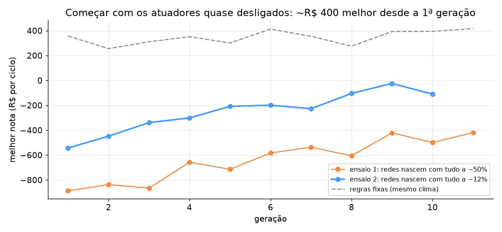

Redes que nascem quase desligadas, e o envio de dentro do treino
Duas mudanças antes da noite. A primeira faz as redes começarem perto do sensato: o ensaio 2 rendeu ~R$ 400 a mais desde a primeira geração. A segunda faz o próprio treino mandar os números ao celular, para as 3 sementes rodarem numa janela só.
1. O viés de saída em −2
No ensaio 1 (passo 04), toda rede nascia com as saídas em ~0,5, ou seja, todos os atuadores ligados pela metade, dia e noite, inclusive o LED. Com o viés da última camada em −2, a sigmoide começa em ~0,12. A arquitetura e o contrato não mudam: é só o valor inicial de 8 dos 1.992 pesos.
Alternativas descartadas:
- Esperar a evolução aprender a desligar sozinha: ela aprende, mas gasta gerações saindo de muito longe.
- Tirar o LED da fase 1: mudaria o vetor de ações, que precisa ser o mesmo em todas as fases.

| Na geração 10 | Ensaio 1 (viés 0) | Ensaio 2 (viés −2) |
|---|---|---|
| Melhor rede no clima da geração | −R$ 499 | −R$ 110 |
| Campeão nos 10 climas da prova | −R$ 516 | −R$ 42 |
| Campeão em 10 climas inéditos: nota | −R$ 513 | −R$ 54 |
| Campeão em 10 climas inéditos: energia | 1.206 kWh | 490 kWh |
| Campeão em 10 climas inéditos: fora da faixa | 65% | 90% |
| Regras fixas, mesmos climas inéditos | R$ 360 · 164 kWh · 76% fora | |
O campeão do ensaio 2 economiza demais: liga pouco o exaustor e passa mais tempo fora da faixa (90%). O do ensaio 1 errava para o outro lado. A evolução precisa achar o meio-termo, e é isso que as horas da noite devem mostrar.
A mediana piorou (−R$ 1.788 contra −R$ 1.287): muitas redes novas deixam a estufa esquentar. A mediana mede a população inteira; quem importa para a próxima geração são as melhores.
2. O envio para o celular de dentro do treino
O treino/nuvem.py olha uma pasta só, e cada semente grava numa pasta própria. Com --nuvem, o treinar.py roda o mesmo Sincronizador numa thread à parte: uma segunda linha de execução dentro do mesmo programa, a cada 15 s. Ela segue a semente atual sozinha, e internet lenta ou fora do ar nunca atrasa a evolução. No fim, ou no Ctrl+C, ela manda o estado final.
Alternativas descartadas: uma janela de envio por semente (falharia na troca, comigo dormindo); mandar só a primeira semente.
Se o programa inteiro morrer (queda de energia), ninguém marca a execução como "parada" na nuvem: o celular fica na última geração enviada. Com o nuvem.py numa janela separada, isso era detectado depois de 15 min.
Teste: uma execução minúscula (6 redes, 3 gerações) chegou inteira ao Supabase: estado final com rodando = false, 3 gerações, o modelo e a gravação. Depois foi apagada.
Outro detalhe
O orçamento --horas agora é repartido pelo tempo que sobra: cada semente recebe (fim − agora) ÷ (sementes que faltam). Uma semente que atrase não rouba tempo das outras.
Como reproduzir
.venv\Scripts\python.exe -m treino.treinar --horas 0.17 --prova-cada 5 --saidas treino/saidas/ensaio2
.venv\Scripts\python.exe -m treino.relatorio treino/saidas/ensaio2/fase1-semente7-20261124
.venv\Scripts\python.exe -m treino.treinar --populacao 6 --dias 1 --geracoes 3 --prova-cada 3 --semente 99 --nuvem --saidas %TEMP%\testeEm aberto
A noite (passo 06): 3 sementes (7, 8 e 9) até as 5h, com --nuvem.
Links
- Commits
bdb9ae6(viés),c368fa1(envio) · branchtreino-fase-d-neuroevolucao treino/rede.py(pesos_iniciais) ·treino/treinar.py(EnvioNuvem)